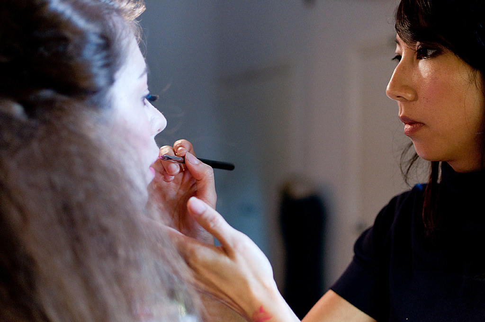

Ever since I was a little girl, I was wearing makeup. Not for the purpose of covering up insecurities, but as a performer. As a competitive dancer, I was used to my mom patting my face with foundation, bright red lipstick, and so much more since the age of three. As I got older, my love for makeup only continued to grow, trying to follow makeup tutorials of beauty gurus on Youtube, doing makeup on my family members, and buying all of the most viral makeup products. This then fostered a love for haircare, skincare, and all of the other aspects of the cosmetics industry.
I have seen a lot of products and brands come and go for a variety of different reasons. When looking at the amount of cosmetic companies that are in the world today, it is nearly impossible to know where everything comes from and how it is manufactured. In addition to this, it is not likely that most people are taking a look at the ingredients of their cosmetic products. Most people do not even really look at the ingredients that are in their food. What is in a product is not necessarily the first thing that comes to my mind when I am looking to buy makeup or cosmetic items, however, it is something that is very important for every consumer to be aware of since many products could contain harmful ingredients.
Chemicals found in cosmetic products is an issue that must continuously be followed up on and requires constant attention. Because of the contact cosmetics have with the human body, one wrong formula can be detrimental to the health of the consumer. While most cosmetic products are manufactured in China, the United States is the second largest place for cosmetic manufacturing. Out of all of the states, California manufactures the most products, a reasoning as to why the California Safe Cosmetics Program in the California Department of Public Health (CDPH) is continuously collecting data about chemical reports.
Looking at these reports, what was included in order to interpret the data was label names of cosmetic/personal care products, company/manufacturer names, product brand names, product categories, Chemical Abstracts Service registry numbers of the reported chemical ingredients, names of reported chemical ingredients, the number of reported chemicals for each product, and dates of reporting product discontinuation or reformulation if applicable.
While some may assume that large brands have the funding and financial backing as well as the best facilities and teams to ensure their products are to the safest standard, some of the largest companies in the world have the highest number of reports for chemicals being found in their products, especially due to the fact that products do not always need to be tested for safety. While the Food and Drug Administration (FDA) does review and regulate products, "FDA does not develop or test products itself."
Some companies sell solely one type of product -- hair, nails, makeup, etc.-- however, others function more as an overarching brand that sells a variety of cosmetic products. That is why it makes sense as to why Revlon Consumer Product Corporations has the highest number of reports out of all cosmetic companies because they do not only sell one type of product. However, out of all of the types of companies with reports of chemical hazards, makeup brands appear the most often. Over 2/3 of the companies listed on the chart above are incredibly successful makeup brands, showing how harmful these products can actually be if companies prioritize how the product looks or performs over actual safety.
There are a plethora of chemicals that have been reported to CSCP, however, there are a few that continue to make their way to the top of the list. The highest reported chemical: Titanium Dioxide. Titanium Dioxide (TiO2) is a fine white powder or dust that is used in a wide variety of personal care products, including sunscreens, pressed powders, and loose powders, typically for the purpose as a UV filter or for whitening. However, what is harmful about the chemical is that it is technically classified as a carcinogen-- meaning that inhalation can lead to lung cancer according to The International Agency for Research on Cancer.
While this is something that most people will not pay too much attention to, without action being taken in order to hold these companies accountable, development and production of these types of products will continue to find its way into this competitive market. Without reports being made, consumers-- whether that be the average makeup user or a makeup artist who has hundred of clients trusting them with the products they are using-- could find themselves in very serious and unfortunate situations.
Makeup artist Juliane Barreto, while never personally having reported a product herself, is constantly checking products to make sure she is using the safest products on her clients. Barreto has witnessed many products being taken off of the shelves and being discontinued, most often being lipsticks. However, to avoid controversy, companies do not always explain why products are taken off the market.
"That happens often, but they never disclose the reason."
While chemicals in cosmetics are necessary and serve important functions, they raise concerns regarding safety and long-term health effects. Because of the potential risks and health hazards that can come from not reporting harmful chemicals in products, consumers need to be informed and call for more transparency from large corporations. It is crucial for both manufacturers and consumers to prioritize safety and sustainability when selecting and using cosmetic products.
To report a product, Call the FDA's Food and Cosmetics Information Center (FCIC) at 1-888-SAFEFOOD (1-888-723-3366).